KVM Install
 KEY TAKEAWAYS
KEY TAKEAWAYS
- Ubuntu supports KVM virtualization on the desktop and server
- KVM supports NATed and bridged interfaces just like VMware Fusion or workstation.
- You create/manage KVM virtual machines with a GUI (virt-manager) or from the terminal (virsh commands)
- KVM is updated automatically by Ubuntu so there are never package mismatches with the kernel.
Introduction
KVM is the Linux Kernel-mode Virtual Machine tool. It's free and easy to install on Ubuntu. With all the uncertainty around VMware workstation, it's worth knowing how to use KVM! Like everything else when switching to Linux, it will feel quite different than using VMware Workstation at first. But once you spend a couple days KVM and create a few virtual machines I think you will like it.
Plus, VMware is always way behind the Linux kernel so you have to resort to running the updates from vmwware host modules after you update Ubuntu. It's an ugly situation.
By default KVM creates virtual machines on a NATed interface with a dhcp address in the range of 192.168.122.2-.254. The linux package dnsmasq is used to provide the DNS/DHCP services. NAT enables connected guests to use the host physical machine IP address for communication to any external network.
The default network interface is virbr0 and using ip address device show virbr0 looks like this:
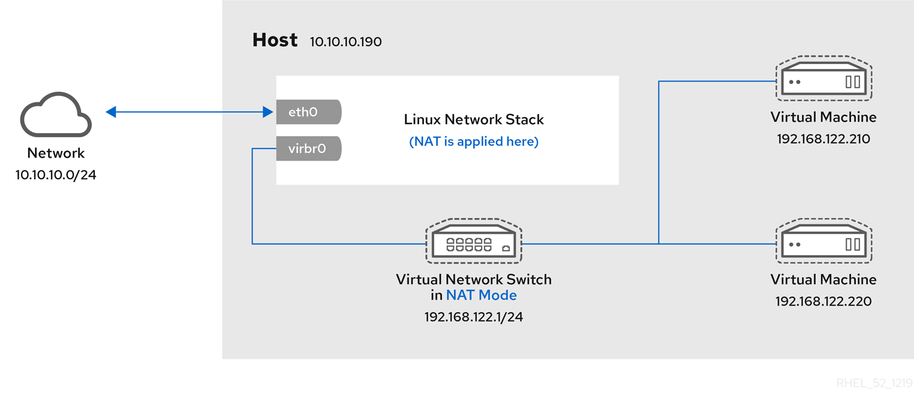
As with VMware, you can create a bridge interface so that the virtual machine has an ip address on the same network as the host. Creating a bridge interface is explained below. A network engineer will probably need a bridge interface.
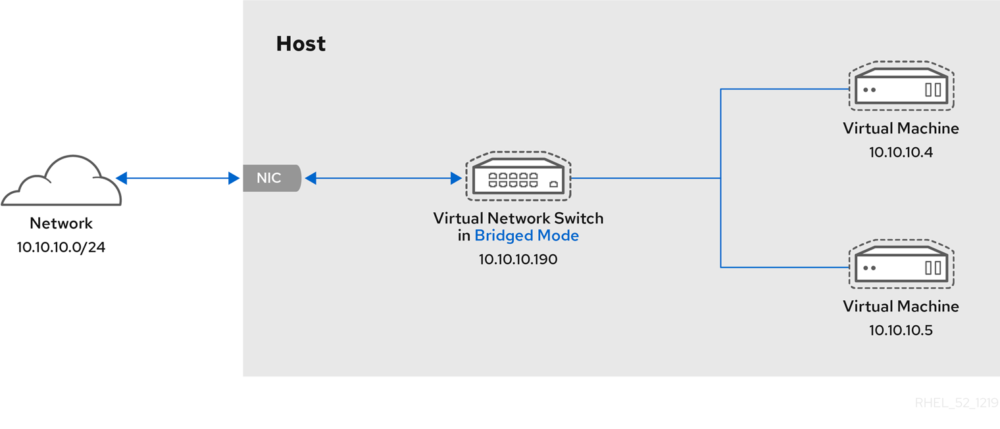
The Redhat links in the references section have a lot of information on creating interfaces.
Installing KVM
To run KVM, you must have virtualization enabled at the BIOS level. It can be a challenge to find virtualization in the BIOS because different manufacturers call it different things. The easiest way to find out what virtualization is called on your PC is to google your motherboard model.
Verifying virtualization
Once you have enabled virtualization in the BIOS, you should verify that it is seen by the CPU.
Using egrep
To verify that virtualization is enabled in BIOS, run:
48
This greps the /proc/cpuinfo file, vmx is Intel, svm is AMD. You need to see a number in the output. In my case I have a 24 core Xeon processor that provides 48 cores of virtual CPUs.
Install cpu-checker
This is a optional package. From the Debian site: "There are some CPU features that are filtered or disabled by system BIOSes. This set of tools seeks to help identify when certain features are in this state, based on kernel values, CPU flags and other conditions. Supported feature tests are NX/XD and VMX/SVM."
The tools is run using kvm-ok even though it's installed with cpu-checker for some reason. One advantage it has over grepping the /proc/cpuinfo file is that in some failure cases it will provide hints on what to do.
from man kvm-ok page:
DESCRIPTION
kvm-ok is a program that will determine if the system
can host hardware accelerated KVM virtual machines.
The program will first determine if `/proc/cpuinfo`
contains the flags indicating that the CPU has the
Virtualization Technology (VT) capability.
Next, it will check if the /dev/kvm device exists.
If running as root, it will check your CPU's MSRs
to see if VT is disabled in the BIOS.
In some failure cases, kvm-ok provides hints on
how you might go about enabling KVM on a system
where it is arbitrarily disabled.
If KVM can be used, this script will exit 0, otherwise it will exit non-zero.
Use lscpu
lscpu is a built in tool to view cpu information. You can see on line 10 that the virtualization is VT-x:
Installing the packages for KVM
Verify the Ubuntu Version
While not technically necessary, you can verify the version of Ubuntu you have installed with:
Make sure Ubuntu is up to date
Install the packages
or you can use this to install all at once:
I prefer to do one package at time so that I can watch each package but either works. All packages are about 200MB.
Configure the groups
Your user has to be in the following groups
Verify the groups have your user
Enable the virt daemon
If you make changes and need to restart the daemon
Where are the virt files stored
The qemu files are located in /etc/libvirt. You can list the files using:
Back up qemu.conf
If you want to make any changes to the qemu.conf file I recommend making a backup first using:
Run the following to show the backup:
To list the qemu.conf file:
To edit the qemu.conf file:
Creating a KVM Bridge
Why do I need create a bridge?
From the Tecmint link in the reference section below
A typical use case of software network bridging is in a virtualization environment to connect virtual machines (VMs) directly to the host server network. This way, the VMs are deployed on the same subnet as the host and can access services such as DHCP and much more.
See the link Introduction to Linux interfaces for virtual networking for a detailed tutorial on all the virtual interfaces that Linux supports. The list is impressive!
If you just need a virtual machine that is isolated on the host you can use the NAT interface that is built into KVM. Each guest will get an IP address in the range 192.16810.2 - 192.168.10.254.
If you need a static address on the default network see KVM libvirt assign static guest IP addresses using DHCP on the virtual machine
The LAN Information
- LAN Network 192.168.10.0/24
- Ubuntu workstation NIC -
eno1
Install the bridge-utils package
If you installed the bridge-utils package earlier you can skip this step.
sudo apt-get install bridge-utils
If you can't remember just run the command again. APT will tell you that the lastest version is installed and exit.
Create the Netplan yaml file
sudo touch etc/netplan/01-netcfg.yamlsudo gnome-text-editor etc/netplan/01-netcfg.yaml- Paste the following into the yaml file. Change IP addresses and interfaces to match your machine.
# This file describes the network interfaces available on your system
# For more information, see netplan(5).
network:
version: 2
renderer: networkd
ethernets:
eno1:
addresses:
- 192.168.10.235/24
bridges:
br0:
interfaces: [ eno1 ]
dhcp4: false
addresses: [192.168.10.250/24]
routes:
- to: default
via: 192.168.10.253
metric: 100
on-link: true
nameservers:
addresses: [1.1.1.1]
dhcp6: yes
link-local: [ ]
parameters:
stp: true
forward-delay: 4
Save the file, then change the permissions
sudo chmod 600 etc/netplan/01-netcfg.yaml
Activate the bridge
sudo netplan apply
Fix any errors. Yaml is a pain to work with. You will probably have some errors in the beginning!
This creates a bridge named br0 mastered to eno1.
Use ip a to view the interfaces:
eno1: <BROADCAST,MULTICAST,UP,LOWER_UP> mtu 1500 qdisc pfifo_fast master br0 state UP group default qlen 1000
br0: <BROADCAST,MULTICAST,UP,LOWER_UP> mtu 1500 qdisc noqueue state UP group default qlen 1000
link/ether e6:b5:f8:a0:9b:c5 brd ff:ff:ff:ff:ff:ff
inet 192.168.10.250/24 brd 192.168.10.255 scope global noprefixroute br0
valid_lft forever preferred_lft forever
Display the bridge
Display the netplan configuration
The following displays the system wide network configuration
sudo netplan get
Ping the hosts on the bridge
The Window server is at 192.168.10.231 and the Windows 10 guest is at 192.168.10.232
list out the xml config files
l -la /etc/libvirt/qemu/networks
Verify the network switch settings
Make sure that the switchport of the physical network switch doesn't have bpdu-guard enabled! Once the bridge comes up it sends bpdu frames.
I was connected to a Cisco 3850 on an access port. The switch had spanning-tree portfast bpduguard default in global configuration. The port went into err-disabled when the bridge came up. It took me a while to figure out why the bridge wasn't working!
I changed the port to a trunk with native vlan 10 to match the configuration that had been on the acces port.
Virt Commands
View saved configuration
virsh dumpxml win2k16 | grep -i 'bridge'show bridge config for a host named win2k16virsh dumpxml win2k16 > ~/win2k16.xmlSave the configuration for a host named win2k16
Start/stop a virtual machine
sudo virsh win2k16 startStart a virtual machine named win2k16sudo virsh shutdown win2k16Send an ACPI shutdown signal to the virtual machinesudo virsh destroy win2k16Power off the VM without signalling it. Data loss can occursudo virsh rebootwin2k16 Does not signal the VM. Data loss can occur
View VM Details
virsh dominfo win2k16Show detailed information
Check Virtual Machine status
virsh domstate win2k16
List virtual machines
virsh list --allList all vms including those not runningvirsh listList all running vms
Connect to VM Console
sudo virsh console win2k16See How to enable KVM virsh console access for a detailed article on how to setup console access
View DHCP leases
virsh net-dhcp-leases defaultshow dhcp leases on network default.virsh net-dhcp-leases host-bridgeshow dhcp leases on network host-bridge.
In the yaml file we disabled dhcp with dhcp4: false so there are no leases.
View the network yaml files
- virsh netdumpxml default Show the configuration of the network named default
- virsh netdumpxml host-bridge Show the configuration of the network named host-bridge
Edit the network yaml files
- virsh net-edit default Open the yaml configuration file of the network
defaultin the system editor - virsh net-edit host-bridge Open the yaml configuration file of the network
host-bridgein the system editor
Start/Stop networks
- virsh net-destroy default Stop the network
default - virsh net-start default Start the network
default
Manually create the bridge configuration
You can manually create the bridge and link it to eno1 from the terminal
This method will not survive a reboot but it's quick for testing.
Create a Windows 10 virtual machine
Linux can't ship Windows drivers so you have to download the virtio package first. The Fedora People host the ISO here. Save it to your Downloads directory.
You do not need the virtio ISO if you are creating a Linux virtual machine.
You will need the Windows ISO also. You can download it using this link - Windows 10 2023 Update | Version 22H2
Open the terminal and enter:
Or hit the super key and type virt to bring up the virtual machine icon.
This will open the virt-manager GUI.
Click on the "New Virtual Machine" Icon.
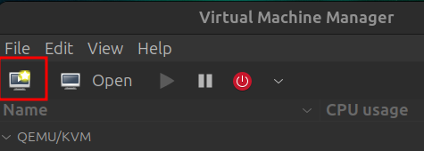
Select "local install media (ISO image or CD-ROM)" and click forward.
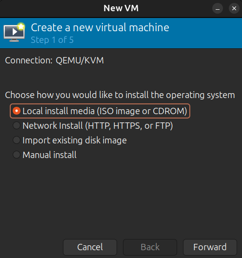
On this screen click "Browse" and select the Windows ISO and click "Forward". Notice that KVM identifies the ISO as Windows 11.
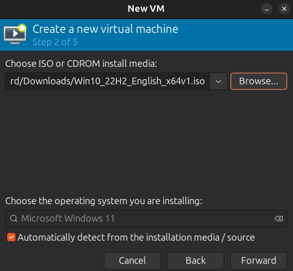
Set the Memory and CPU sizes, click forward
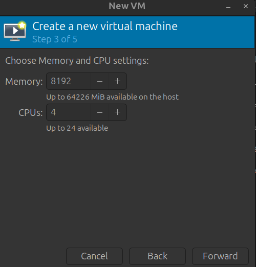
Set the disk size. Since this is a throw away virtual machine I set it to 20GB.
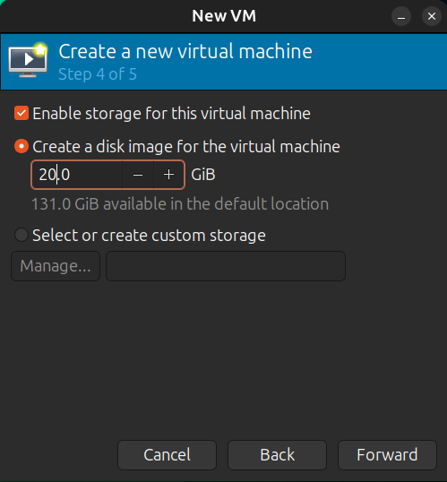
Click on "Select or create custom storage". Click "Manage..." and select the virtio ISO that you downloaded earlier.
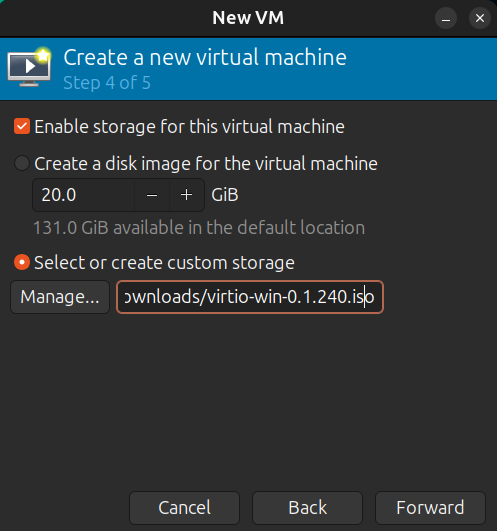
Click Forward, this is the "ready to begin installation" dialog. Click "Customize before install".
Click forward and select the NIC
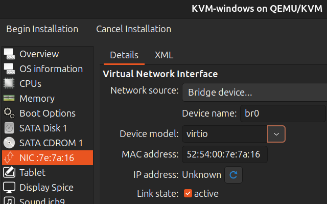
NOTE: you must follow the Creating a KVM Bridge section first. If you just need a NAT virtual machine, you don't need to create a bridge. But you won't be able to remote desktop into the Windows virtual machine.
If you need a bridge, leave the NIC at NAT, finish creating the virtual machine, follow the instructions for creating a bridge, then go back and change the NIC to Bridge/Br0 using the Edit, Virtual Machine Details menu.
Click finish and the GUI based installation of Windows will begin. It's different than a Windows install on bare metal and you will see an image of the virtio drivers installing before the windows installation starts.
Start the virtual machine
From the terminal you can open the Virtual Machine's GUI console using
virt-viewer
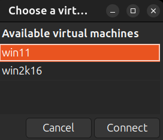
Select the Win11 virtual machine anc click connect.
The GUI console will open:
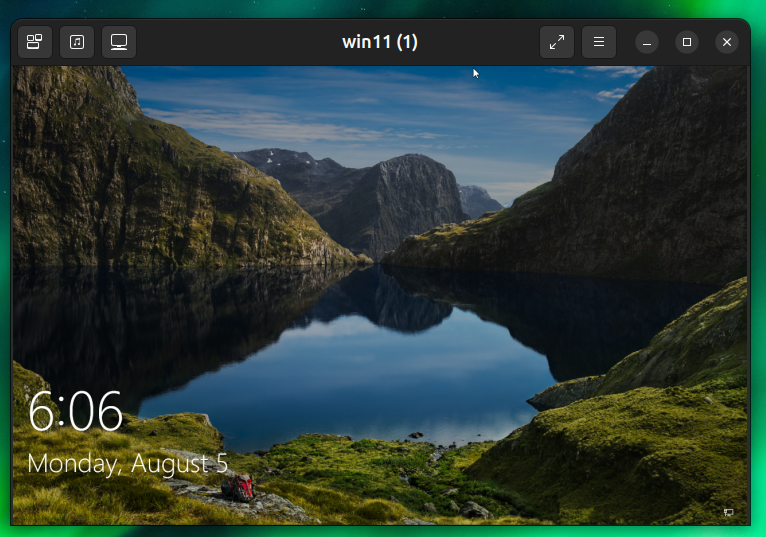
Click the icon on the top left and select Ctrl+Alt+Delete.

Note: The VM says it's Windows 11 but it is actually Windows 10!
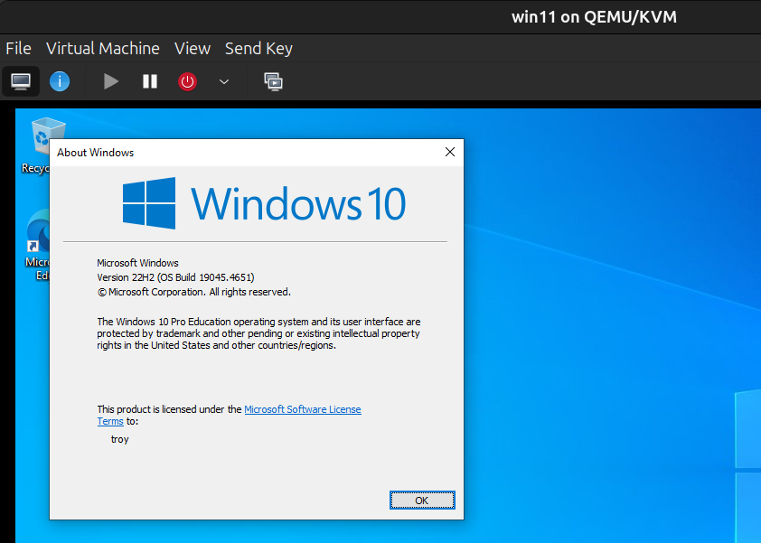
Congratulations, you now have a bridged Windows virtual machine up and running on Linux with KVM!
Reference Links
- VM Networking Libvirt / Bridge - A youtube video
- How to add a static IP in Ubuntu 22.04 Server
- How to Configure Network Bridge in Ubuntu
- Error in network definition: bond0: interface not defined
- use the stable VirtIO ISO, download it from here - Virtio drivers for Windows guests
- The Essential KVM Cheat Sheet for System Administrators
- How to enable KVM virsh console access
- Windows 10 guest best practices - This video is for ProxMox but the section on installing the virtio drives for the Windows NIC works on KVM with virt manager.
- Introduction to Linux interfaces for virtual networking - A great article by Redhat. It discusses every type of Linux interface that you can create.
- Redhat Virtualization Deployment Guide - A great article by Redhat on deploying KVM.
- How to Install KVM on Ubuntu 24.04 Step-by-Step